نظام إدارة الورديات الذكي
نظام إدارة الورديات الذكي
ودّع فوضى الواتساب — موقع وتطبيق يديران كل شيء
بضغطة زر وبتوثيق كامل
النظام يبني الجدول بذكاء
Web · Android · iOS
عشرات الرسائل يومياً... وكل رسالة وراءها قصة
مكالمات، رسائل خاصة، اتفاقات شفهية — بلا توثيق، بلا متابعة، والأخطاء لا تتوقف.
أريد تبديل ورديتي يوم الأحد من 8-17 إلى 15-24... تابع القصة
كل موظف يرى ورديّاته ويبدّل بضغطة زر — والمسؤولون يُحدَّثون تلقائياً
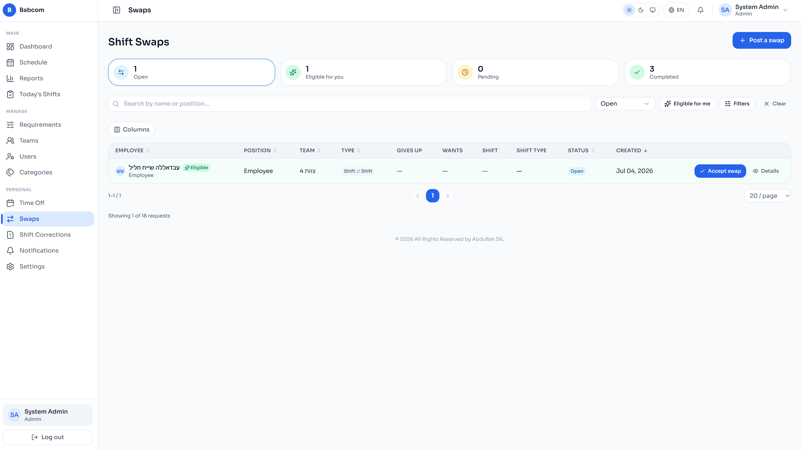
«كيف تريدون العمل الأسبوع القادم؟ وين أيام العطلة؟»
يوفّق النظام بين متطلبات الوردية + رغبات العمال + أيام العطل + ساعات العمل
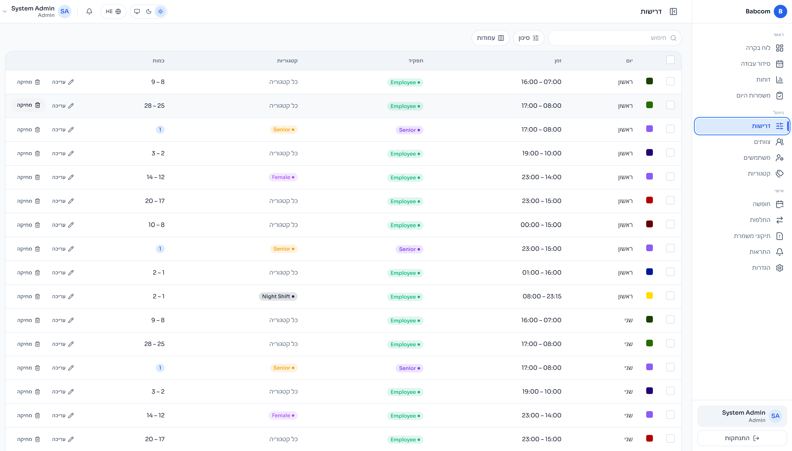
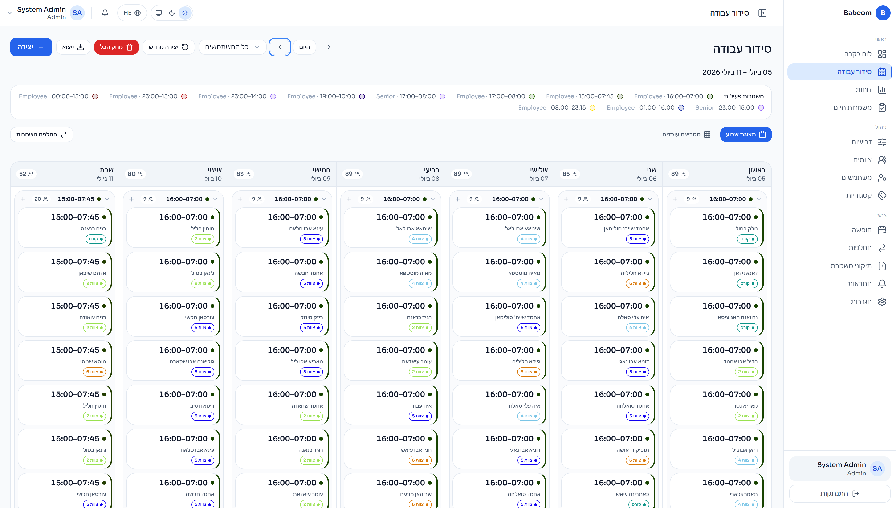
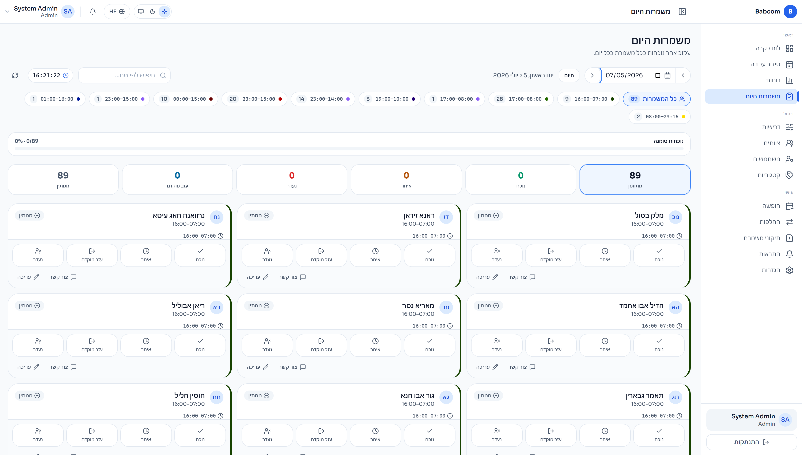
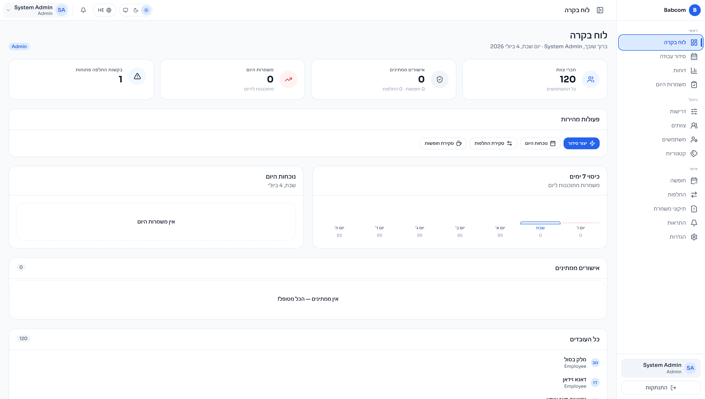
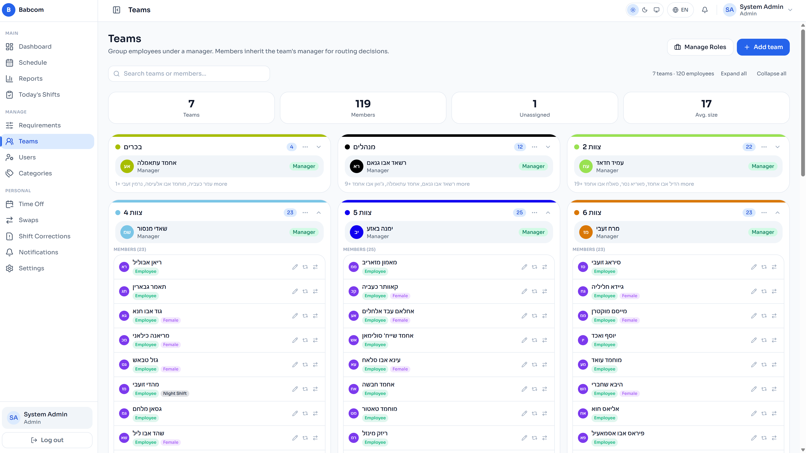
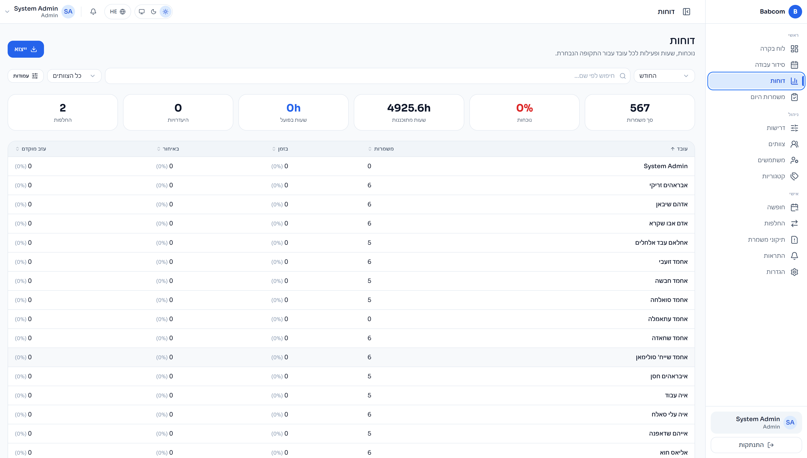
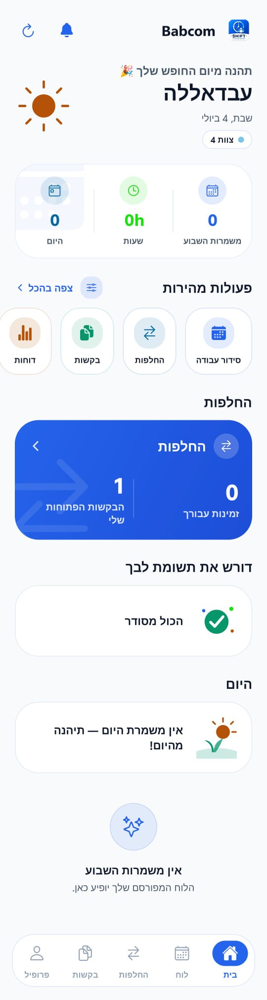
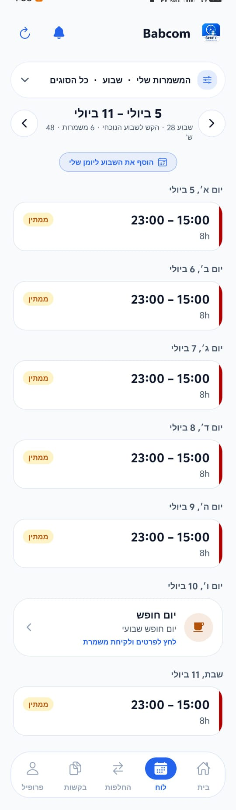
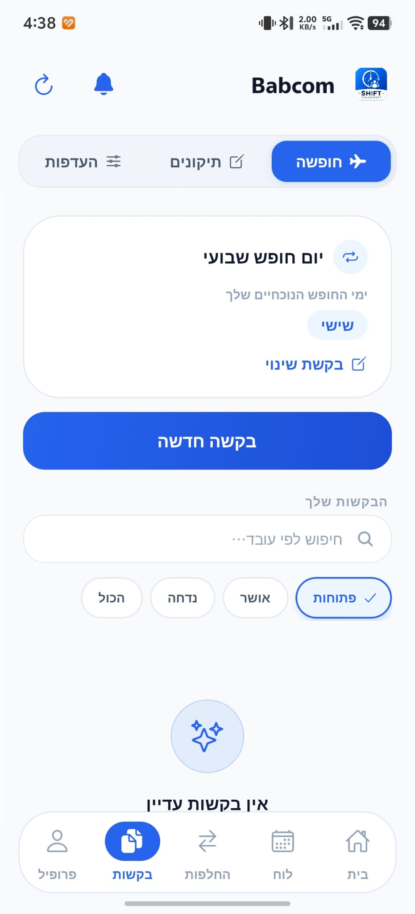
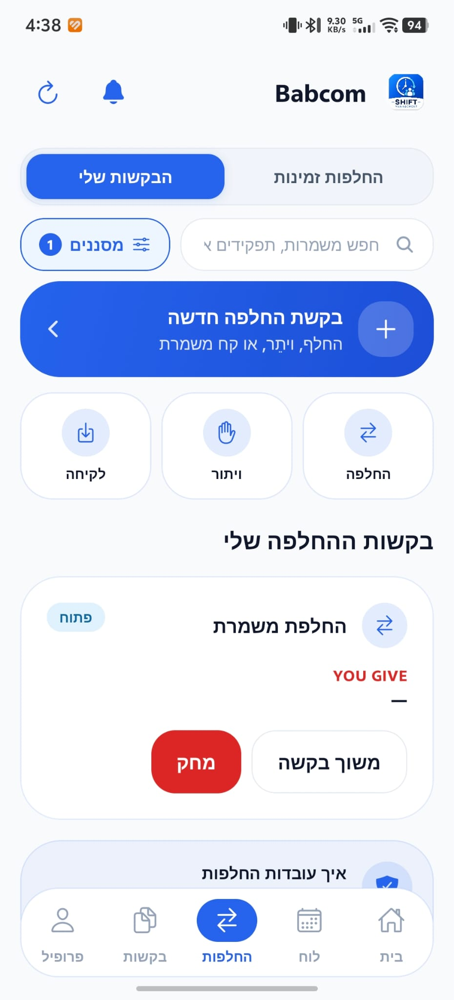
فوضى واتساب، تبديلات شفهية، وجدولة يدوية مرهقة تسبّب الأخطاء والغياب.
موقع وتطبيق يديران التبديل والجدولة والحضور والتقارير — بذكاء وتوثيق كامل.
وقت أقل، أخطاء أقل، ورضا أعلى — لكل موظف ومسؤول في المنظومة.
اختر زميلاً لتبديل الوردية معه:
سيتم إبلاغ المديرين ومسؤول الوردية تلقائياً بعد الموافقة